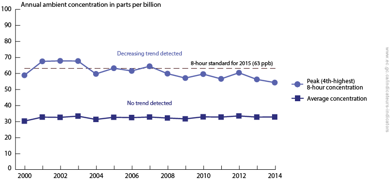

%%html
<script>
function code_toggle() {
if (code_shown){
$('div.input').hide('500');
$('#toggleButton').val('Show Code')
} else {
$('div.input').show('500');
$('#toggleButton').val('Hide Code')
}
code_shown = !code_shown
}
$( document ).ready(function(){
code_shown=false;
$('div.input').hide()
});
</script>
<form action="javascript:code_toggle()"><input type="submit" id="toggleButton" value="Show Code"></form>
import ipywidgets as widgets
import IPython
from IPython.display import HTML
%%javascript
require.config({
paths: {
d3: "https://d3js.org/d3.v3.min"
}
});
require(["d3"], function(d3) {
window.d3 = d3;
});
Concentration and pH¶
Grade 9 curriculum¶
This is a jupyter notebook about how to measure the quantity of different substances in the environment. This includes measuring air and water quality. This notebook will focus on what the concentration and pH of different substances means for the environment. You will be able to:
apply and interpret meausres of chemical concentration
find the pH of a solution using an indicator solution and litmus paper
identify acids, bases, and neutral substances based on pH
apply this knowledge to help determine the health of an environment
Concentration¶
For many of the products that you use or buy, the manufacturer tells us how much of a substance is present by giving the percentage (%) of weight or volume it represents.
Take milk for example. The label 1% on a carton of milk tells us that 1% of the milk is milk fat.
This means that in every 100 ml of milk, there is 1 ml of milk fat.
So a 1 litre (1000 ml) carton contains 10 ml of milk fat.

When we say how much of one substance is contained in a certain amount of another, we are giving a concentration.
Percentage is actually decribing “parts per hundred”.
The concentration 10% is the same as 10 parts per hundred or \(\dfrac{10}{100}\).
This is very helpful for many everyday substances, but many substances are in much smaller concentrations than 1%.
We could give a concentration like 0.00001%, but there’s a simpler way to express this.
This percentage represents \(\dfrac{1}{1,000,000}\) which has its own unit, called parts per million (ppm).
Later in this notebook, we will talk a little bit about a pesticide called DDT. Its concentration is measured in parts per billion (ppb) because it can be deadly in even smaller concentrations.
Just like how 1000 g is equal to 1 kg, 1 ppm is equal to 1 mg/kg (milligram per kilogram). There are 1000 milligrams
in a gram and 1000 grams in a kilogram, so there's 1,000,000 milligrams in a kilogram, making one milligram per
kilogram one part per million.
When the substance is in water, 1 ppm is equal to 1 mg/L (milligram per litre). This only works for water because
water's density is 1 kg/L. Other liquids have different densities, so the concentration needs to be calculated
differently in other solutions.
Let’s look at an example of how to calculate ppm of a substance.¶
Example: If the nutritional information label on a container of yogurt specifies that each 125 g serving contains 7 mg of cholesterol, what is the concentration of cholesterol in a serving of yogurt in parts per million (ppm)? source
Solution:
First, state your information as a ratio.
\(\frac{7 \text{ mg cholesterol}}{125 \text{ g yogurt}} = 0.056 \text{ mg/g}\)
Second, express that ratio in the form of mg/kg
$ 0.056 \text{ mg/g} \times 1000 \text{ g/kg} = 56 \text{ mg/kg}$
Since mg/kg is equivalent to ppm, there are 56 ppm of cholesterol in each serving of this yogurt.
Why is this important?¶
There are many substances that are toxic, meaning they are able to cause harm to organisms.
They cause harm, not by how an organism is exposed to it, nor how long, but by how much enters the organism.
But it’s hard to determine the concentration of the substance which is toxic because many factors influence it.
Body mass and metabolism are two factors that affect when the concentration of a substance is considered toxic.
It is easier to say what concentration would likely kill 50% of the population to which it’s applied.
This is called the lethal dose 50 or LD50.
Many scientists have done studies on what concentrations are harmful to humans. One of the first to do this was Paracelsus during the Renaissance. One of his famous quotes is “only the dose makes the poison”.
Here is a table of the LD50 of different chemicals for humans:
Chemical |
Source |
Concentration (ppm) |
|---|---|---|
botulinum toxin A |
Clostridium botulinum bacterium |
0.00000003 |
dioxin |
contaminant in some herbicides and in PCBs |
0.03 |
nicotine |
cigarette smoke |
0.86 |
solanine |
green parts of potatoes |
6.0 |
caffeine |
coffee, tea, chocolate |
150-200 |
NaCl |
table salt |
12,357 |
glucose |
sugar |
30,000 (for rats) |
H2O |
water |
90,000 (for rats) |
Most of these are extrapolated from data of LD50 of rats or from observational data
You might notice that some things in this table you consume every day. Or you see other people consume these.
It turns out that too much of anything can kill an organism. 90,000 ppm of water is around 6 litres for a healthy average adult. 200 ppm of caffiene is about 100 cups of coffee for that same adult. It’s very difficult to get that kind of concentration within our bodies, as it must be all in the same sitting (before it starts being digested), so we consider that an acceptable risk.
Case Study: DDT¶

DDT, or dichlorodiphenyltrichloroethane, is a pesticide originally created to kill lice, which spread the disease typhus.
It was so effective that it was also used to kill mosquitoes to reduce malaria.
But what people didn’t know when they were using it, was that this pesticide is persistent in the environment, which means that it stays in the environment for really long periods or time.
When DDT was used to control insect damage on crops, it got into water supplies and eventually into the ocean. In the ocean, the concentration of DDT is pretty low, but then small sea life such as zooplankton consume it. Instead of being digested, the pestiside stays in their system and accumulates as they consume it.
Then the small fish that eat zooplankton and plankton consume the DDT as well, and accumulate an even higher concentration within their fat cells. This goes all the way up the food chain, increasing the concentration in each organism, which is called biomagnification.
At each step in the food chain, some of these organisms die because they consumed too much DDT and couldn’t digest it. Humans have even been found to have small concentrations of DDT in our systems too, as we eat animals which have ingested DDT. We track the spread of DDT by calculating its concentration in certain areas and species.
Acids and Bases¶
The main factor that defines an acid or a base is its pH. pH stands for “power of hydrogen”, and it measures the concentration of hydrogen ions (H+) in a solution. The more hydrogen ions there are in a solution, the more acidic a solution is. The pH scale is from 0 to 14 to indicate how strong or weak an acid or base is.
A solution with a pH between 0 and 6 is considered an acid.
A pH of 7 is considered neutral.
A solution with a pH between 8 and 14 is considered a base.
This scale is a logarithmic scale, meaning each number is 10 times stronger or weaker than the number next to it. For example: an acid with a pH of 3 is 10 times stronger than one with a pH of 4.
Acids¶
An acid is a compound that dissolves in water and forms a solution with pH less than 7. Acids are sour and react with bases, neutralizing both to a pH around 7. Acids can be strong like stomach acid, or weak like citric acid (found in sour fruits). You can turn a strong acidic solution into a weak acidic solution by diluting the solution with pure or distilled water (which is a neutral solution).
answers1 = widgets.SelectMultiple(options=['Vinegar', 'Tums/Antacids', 'Pure Water', 'Tomatoes', 'Soap'],
value=[], description='Substances')
def display1():
print("Which of these household substances do you think contain an acid?")
print("You can select more than one by holding 'crtl' while selecting.")
IPython.display.display(answers1)
def check1(a):
IPython.display.clear_output()
display1()
if answers1.value == ('Vinegar', 'Tomatoes'):
print("Awesome! You found the acids!")
print("Vinegar has acetic acid in it, making it sour.")
print("Tomatoes have citric acid in them, also making them a little sour.")
else:
if answers1.value == ('Vinegar',) or answers1.value == ('Tomatoes',):
print("You're right, but there's one more that contains an acid. Look at the definition again.")
else:
print("You've selected at least one substance that is not an acid. Look at the definition again.")
display1()
answers1.observe(check1, 'value')
Which of these household substances do you think contain an acid?
You can select more than one by holding 'crtl' while selecting.
Bases¶
A base is a compound that dissolves in water and forms a solution with pH greater than 7. Bases are bitter and slippery and react with acids, neutralizing both to a pH around 7. Bases can be strong like many household cleaners such as bleach, or weak like baking soda (used in baking and cleaning). You can turn a strong basic solution into a weak basic solution by diluting the solution with pure or distilled water (which is a neutral solution). A basic solution is also called an alkaline solution.
answers2 = widgets.SelectMultiple(options=['Vinegar', 'Tums/Antacids', 'Pure Water', 'Tomatoes', 'Soap'],
value=[], description='Substances')
def display2():
print("From the same list as above, which of these household substances do you think contain a base?")
print("Once again, you can select more than one by holding down 'crtl' while selecting.")
IPython.display.display(answers2)
def check2(a):
IPython.display.clear_output()
display2()
if answers2.value == ('Tums/Antacids','Soap'):
print("Well done! You found the substances that contain a base!")
print("When you eat an antacid, it neutralizes the stomach acid that's giving you heart burn.")
print("Soap contains a small amount of base to make it slippery and able to clean well.")
else:
if answers2.value == ('Tums/Antacids',) or answers2.value == ('Soap',):
print("You're right, but there's another substance that contains a base. Look at the definition again.")
else:
print("You've selected one or more substances that do not contain a base. Look at the definition again.")
display2()
answers2.observe(check2, 'value')
From the same list as above, which of these household substances do you think contain a base?
Once again, you can select more than one by holding down 'crtl' while selecting.
Apply your knowledge¶
Answer the questions below about whether each substance is an acid, a base, or neutral based on their pH.
answers3 = widgets.RadioButtons(options=['An acid', 'A base', 'Neutral'],
value=None)
def display3():
print("Orange juice has a pH around 3. What is it?")
IPython.display.display(answers3)
def check3(a):
IPython.display.clear_output()
display3()
if answers3.value == 'An acid':
print("Great job! Because the pH is less than 7, it's an acid!")
else:
print("That's not right, remember what the definitions of acids and bases are.")
display3()
answers3.observe(check3, 'value')
Orange juice has a pH around 3. What is it?
answers5 = widgets.RadioButtons(options=['An acid', 'A base', 'Neutral'],
value=None)
def display5():
print("Baking soda has a pH around 9. What is it?")
IPython.display.display(answers5)
def check5(a):
IPython.display.clear_output()
display5()
if answers5.value == 'A base':
print("That's right! Because the pH is bigger than 7, it's a base!")
else:
print("That's not right, remember what the definitions of acids and bases are.")
display5()
answers5.observe(check5, 'value')
Baking soda has a pH around 9. What is it?
pH in the Environment¶
Now that we know a few acids and bases that you can find in your house, let’s extend this to the environment. Normal rain has a pH of around 5.6, while pure water has a pH around 7, and ocean water has a pH around 8. Tap water has a pH around 7.5 to prevent corrosion of pipes, but varies because of human influence and natural processes. But sometimes air pollutants can create more acid when it reacts with water in the air, creating acid rain. Acid rain has a pH less than 5.6 and is not healthy for the environment. This video from National Geographic explains acid rain, its effects, and what we can do to help.
HTML('<iframe width="560" height="315" src="https://www.youtube.com/embed/1PDjVDIrFec" frameborder="0" allow="autoplay; encrypted-media" allowfullscreen></iframe>')
/home/mikel/anaconda3/lib/python3.7/site-packages/IPython/core/display.py:694: UserWarning: Consider using IPython.display.IFrame instead
warnings.warn("Consider using IPython.display.IFrame instead")
answers4 = widgets.RadioButtons(options=['Sea water', 'Fresh water', 'Pure/distilled water', 'Acid rain'],
value=None)
def display4():
print("Which type of water has a neutral pH? (A pH around 7)")
IPython.display.display(answers4)
def check4(a):
IPython.display.clear_output()
display4()
if answers4.value == 'Pure/distilled water':
print("That's right! pure water or distilled water has a pH close to 7. That makes it neither a base, nor an acid.")
else:
print("That's not right, look back at the last block of text.")
display4()
answers4.observe(check4, 'value')
Which type of water has a neutral pH? (A pH around 7)
How does changing the pH affect the enviroment?¶
Every substance has a pH. If this pH is changed, it affects organisms that use or consume the substance by changing their pH. Changing an organism’s pH will affect how it functions. For example, making soil more acidic detroys nutrients, making plants unable to grow healthy. Acidic water can poison fish as well as their eggs which prevents them from hatching. There’s a lot of balance that goes on in nature and changing pH disturbs that balance which affects much more than just the original change.
The full scale¶

How do we measure pH?¶
There are lots of ways to meausre pH. There’s even a meter that records the pH of a solution digitally, but those are expensive. There are lots of cheaper indicators that change colour when the pH changes past a specific limit. If you want to know if something is acidic or basic, but not the exact pH, there is a test called litmus paper. Litmus paper comes in blue and red. The blue litmus paper turns red if it’s dipped in an acid. The red litmus paper turns blue if it’s dipped in a base. There’s also a universal indicator solution which changes colour at different pHs between 2 and 10. There’s many more indicators such as phenolthalein, phenol red, bromothymol blue, and even cabbage juice. These all change colour at different points on the pH scale.
Lab¶
Let’s test a mystery solution with litmus paper to determine if it’s an acid or a base. Drag the red and blue litmus paper strips into the liquid in the beaker one at a time.
Remember, if the red litmus paper turns blue on the end that was dipped, it’s a base. If the blue litmus paper turns red on the end that was dipped, it’s an acid. If neither change colour when dipped, then it’s neutral.
%%html
<script type = "text/javascript" src="sources/animation2.js"></script>
%%html
<div id="animation"></div>
<script>
display(10);
</script>
<! -- 10 represents the pH of the solution in the beaker.
If this is changed then the question below the lab might not have the right answer.-- >
answers6 = widgets.RadioButtons(options=['An acid', 'A base', 'Neutral'],
value=None)
def display6():
print("Is the solution in the beaker an acid, a base, or neutral?")
IPython.display.display(answers6)
def check6(a):
IPython.display.clear_output()
display6()
if answers6.value == 'A base': # Here's where it checks for the right answer
print("Great job! Because the red litmus paper turned blue on the end, it's a base!")
else:
print("That's not right. Look at what the litmus paper tells you again.")
display6()
answers6.observe(check6, 'value')
Is the solution in the beaker an acid, a base, or neutral?
Universal indicator solution¶
Universal indicator can come on paper like the litmus tests, or it can be in a solution that is put into the solution being tested. If you’re using paper then the paper changes colour with respect to the scale below depending on the pH. If you use the solution in your tested solution using a dropper, then the whole tested solution changes colour with respect to the scale below depending on the solution’s pH!

Try solutions with different pHs¶
Instructions¶
Slide the slider to change the pH of the solution in the beaker. Then add the universal indicator solution in the dropper over top the beaker. Then watch what colour the solution in the beaker changes to! If you want to try another pH, pick a new pH and drag the dropper over the beaker again!
%%html
<link rel="stylesheet" type="text/css" href="sources/dropperstyle.css">
<script type = "text/javascript" src="sources/dropperAnimation.js"></script>
%%html
<div id="slider"></div>
<div id="beaker">
</div>
<script>
display2(7);
</script>
How to measure water quality¶
There are many factors that go into determining the quality of fresh and salt water, including acidity (pH), colour, concentration of disolved oxygen, and turbidity (the amount of suspended particles in the water). Let’s apply our knowledge of concentration and pH to measuring water quality.
Good quality fresh water usually has a pH around 6-7, and a concentration of dissolved oxygen around 9-10 ppm. Good quality sea water has a pH around 7-8.5, and a concentration of dissolved oxygen around 7-8 ppm. These measurements are taken at room temperature, as the temperature of water affects the amount of dissolved oxygen that can be found in water. source
answers7 = widgets.RadioButtons(options=['pH will increase towards 14',
'pH will decrease towards 1',
'pH will because neutral (7)',
'pH will stay the same'],
value=None)
def display7():
print("What will happen to the pH of a pond if acid rain falls into it?")
IPython.display.display(answers7)
def check7(a):
IPython.display.clear_output()
display7()
if answers7.value == 'pH will decrease towards 1':
print("That's right! Acid rain makes the pond more acidic, meaning it's pH is closer to 1.")
else:
print("Sorry, try again. Remember what acid rain is.")
display7()
answers7.observe(check7, 'value')
What will happen to the pH of a pond if acid rain falls into it?
Water in the Edmonton Area¶
Determining the quality of drinking water is a little different than that of fresh or sea water. Drinking water doesn’t need a specific concentration of dissolved oxygen, and is instead tested for things like the concentration of calcuim carbonate (CaCO3) because it makes the water hard. However, pH is always used for determining the quality of water.
Let’s compare data from a water treatment plant in the Rossdale area of Edmonton to the average pH of distilled water, tap water, and salt/sea water that we learned in this notebook. Fill in the values of the average pH of each of these kinds of water by double clicking the appropriate box under Average pH. You can find this information earlier in the notebook.
When you’re done, make sure you’re not on a editable cell, then press the “click to save data” button.
# same code from investigating electrical conductivity notebook
import pandas as pd
import numpy as np
import qgrid
df = pd.DataFrame(index=pd.Series(['Distilled Water', 'Tap Water', 'Salt Water']), columns=pd.Series(['Average pH']))
df_widget = qgrid.QgridWidget(df =df, show_toolbar=False)
df_widget
# same code from investigating electrical conductivity notebook
from IPython.display import Javascript, display
from ipywidgets import widgets
def run_all(ev):
display(Javascript('IPython.notebook.execute_cell_range(IPython.notebook.get_selected_index()+1,IPython.notebook.get_selected_index()+2)'))
button = widgets.Button(description="Click to save data")
button.on_click(run_all)
display(button)
# same code from investigating electrical conductivity notebook
output_data = df_widget.get_changed_df()
Now that we have the averages, here is the collected data from Rossdale in the past week. Notice that column 2 is labelled pH. That is what we will be comparing to our averages. Click on the button below to compare the data in a graph.
# same code from investigating electrical conductivity notebook
url_ELS = "http://apps.epcor.ca/DAilyWaterQuality/Default.aspx?zone=ELS"
url_RD = "http://apps.epcor.ca/DAilyWaterQuality/Default.aspx?zone=Rossdale"
table_RD = pd.read_html(url_RD, header=0)
table_ELS = pd.read_html(url_ELS, header=0)
qgrid.QgridWidget(df = table_RD[0])
# same code from investigating electrical conductivity notebook
button = widgets.Button(description="Update the plot")
button.on_click(run_all)
display(button)
# same code from investigating electrical conductivity notebook
import matplotlib.pyplot as plt
from matplotlib.colors import Normalize
import matplotlib.cm as cm
import warnings
# ignoring runtime warning from taking the mean of a single number
# this also catches strings.
np.warnings.filterwarnings('ignore')
cmap = cm.Set1
norm=Normalize(vmin=0, vmax=len(output_data.index)+1)
for i in range(len(output_data.index)):
try:
sample_mean=float(output_data.iloc[i,0])
plt.axhline(y=sample_mean, c=cmap(norm(i)), ls='dashed', label='Average of ' + output_data.index[i], lw='3')
except ValueError as e:
# skip data that has strings in it.
continue
plt.plot(table_RD[0].iloc[2, 1:8], 'bo-', label='Rossdale readings')
#plt.plot(pd.DataFrame(table_RD[0].iloc[6, 1:8].apply(pd.to_numeric)))
plt.xlabel('Day of Measurement')
plt.ylabel('pH (pH)')
plt.title('pH of treated waste water over the last week')
plt.legend(bbox_to_anchor=(1.05, 1), loc=2)
plt.show()
<Figure size 640x480 with 1 Axes>
answers8 = widgets.RadioButtons(options=['An acid', 'A base', 'Neutral'],
value=None)
def display8():
print("What should be added to Rossdale's water to make it more like tap water?")
IPython.display.display(answers8)
def check8(a):
IPython.display.clear_output()
display8()
if table_RD[0].iloc[2, 7] >= 7.5 and answers8.value == 'An acid':
print("That's right! Adding an acid to Rossdale's water will make it more like tap water because it's too alkaline.")
else:
if table_RD[0].iloc[2, 7] < 7.5 and answers8.value == 'An base':
print("That's right! Adding a base to Rossdale's water will make it more alkaline like tap water.")
else:
print("That's not right, remember what happens when acids and bases react and a pH of 7 is neutral.")
display8()
answers8.observe(check8, 'value')
What should be added to Rossdale's water to make it more like tap water?
How to measure air quality¶
The video below is a company in Victoria, Australia that measures the air quality. Try to find all the substances they meausre the concentration of.
HTML('<iframe width="560" height="315" src="https://www.youtube.com/embed/mp3kztZy7ow?start=19" frameborder="0" allow="autoplay; encrypted-media" allowfullscreen></iframe>')
They measure the concentration of carbon monoxide (from car exhaust) which is harmful in large amounts. They also measure the amount of ozone close to the earth. Ozone is good for us when it’s 6-10 miles from the ground as it protects us from the sun’s ultraviolet rays. But near the ground, ozone reacts with other chemicals to create harmful substances. If you’ve ever seen smog, ozone is one of its main components.
Ozone at ground level naturally occurs in concentrations around 10 ppb, but becomes a health concern for sensitive organisms at concentrations higher than 85 ppb.
Look at the graph below. Is the ozone concentration average in Canada a concern?

If you want to see more trends of air quality in Canada visit www.cananda.ca and scroll to the bottom and look under “Related Indicators”.
Conclusion¶
Let’s summarize what we’ve learned in this notebook. We have learned:
Concentration is in ppm, ppb, or ppt
LD50 is what concentration kills 50% of organisms that consume a substance
DDT is an example of biomagnification
Acids are sour and have a pH less than 7
Bases are bitter and slippery and have a pH greater than 7
Concentration and pH are used to check the quality or water and air
This notebook has a lot of content in it, so you might need to go through it a few more times to really remember all the details. If you want some more resources on this topic, check out these websites:
https://colgan-science9.weebly.com/acids-and-bases.html
http://www.k12science.org/materials/k12/science/environmental-science/